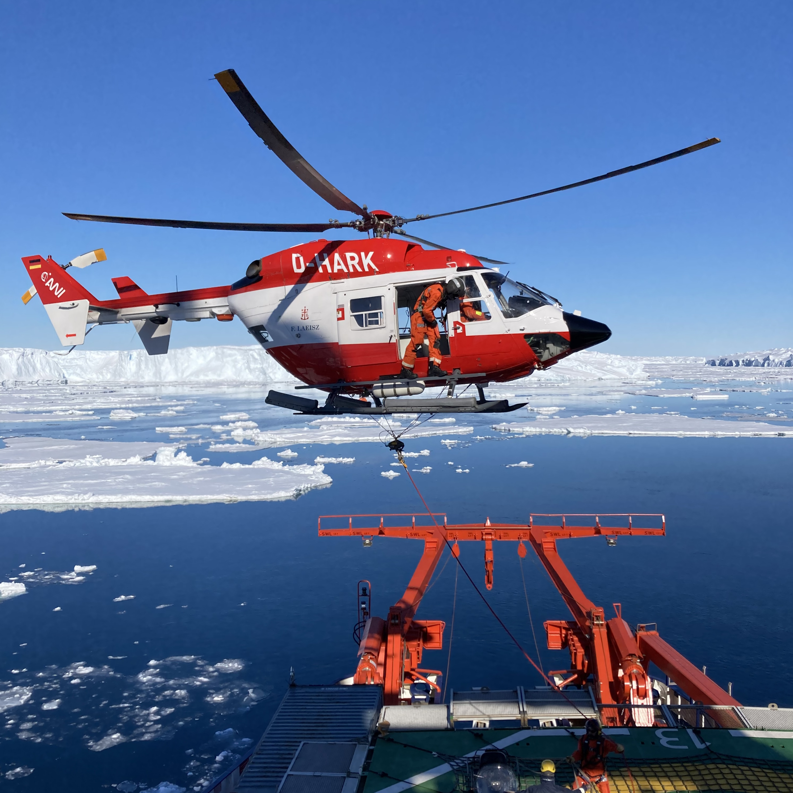
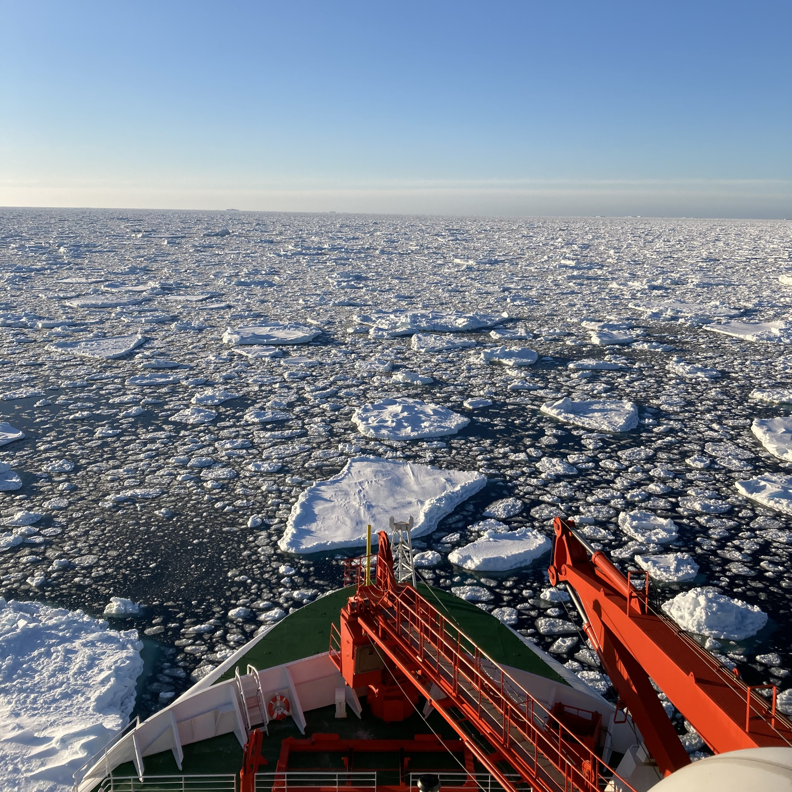
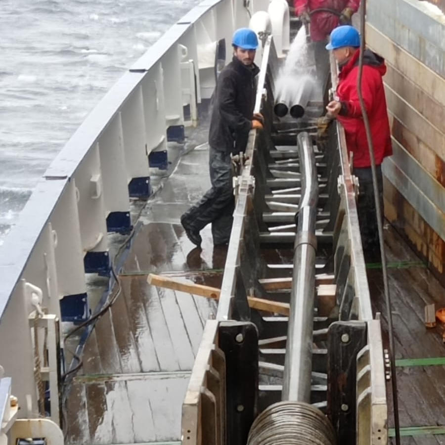

Expeditions
List field campaigns, cruises, polar trips, deployments, etc.
Expedition / Campaign Name
YYYY • Location
What was the objective? What was your role? What did you measure/collect?
Expedition / Campaign Name
YYYY • Location
Add another one here.
France TV coverage: mission scientifique de haut niveau pour le navire de recherche allemand Sonne
EASI-1 PS128 /Expedition onboard the Polarstern
2018 • Antarctica



Checkout a little arcticle in the local french newspaper : Il fait flotter le blason de sa petite commune de Vendée en Antarctique
EAGER MD214 /Expedition onboard the Marion Dufresne
2018 • South China Sea around Taiwan
What was the objective? What was your role? What did you measure/collect?